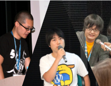
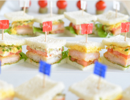

ABOUT WORDBASH
「懇親会が本番？それ本番で聞かせてよ！」
Web系のイベントに参加した時、「懇親会が本番だよ」と言われたことはありませんか？
イベント後の懇親会では登壇者同士の会話や
自分から直接質問しに行くことで
思いもよらない発見があって面白い
自分から直接質問しに行くことで
思いもよらない発見があって面白い
いろんな人と話をすることで
つながりが増えてより楽しく学べるから
懇親会に参加するのは大事
つながりが増えてより楽しく学べるから
懇親会に参加するのは大事
座ってスライド読むだけならWebでもできるよね？
本編行くだけなら参加レポートと
後でアップされるスライド見るだけで十分
本編行くだけなら参加レポートと
後でアップされるスライド見るだけで十分
CONTENT

個性豊かなスピーカーによるトーク＆セッション
東は東京、西は長崎。公式ディレクトリ掲載テーマ作者からコアコントリビューターにライターにWordBenchモデレーター。普段なかなか揃う機会の少ないだいぶ尖ったスピーカーによるオフレコスレスレなトークとセッションが聞けるイベントです。

自分のペースで楽しめる立食形式
「懇親会のような本編」というコンセプトのもと、座ってセッションを聞くだけのイベントではなく常に立食で軽食を楽しめるスタイルで準備しています。飲食だけでなく、前のセッションで気になった話を直接聞きに行くチャンスかも！？
SPEAKER
石川栄和
株式会社ベクトル代表取締役。ウェブサイト制作やシステム開発をする傍ら初心者向け無料WordPressテーマ「BizVektor」を開発・配布しています。
今年７月にはBootstrapベースのシンプルな新テーマ「Lightning」と、同時開発の多機能プラグイン「ExUnit」をWordPress公式ディレクトリで公開。
2015年は主にスケボーブログを毎日書く事にリソースを裂いて各方面の業務に支障が出ていのですが、最近はスケボーブログすら毎日更新出来ないほど多方面で炎上中（2015/12/7現在）
今年７月にはBootstrapベースのシンプルな新テーマ「Lightning」と、同時開発の多機能プラグイン「ExUnit」をWordPress公式ディレクトリで公開。
2015年は主にスケボーブログを毎日書く事にリソースを裂いて各方面の業務に支障が出ていのですが、最近はスケボーブログすら毎日更新出来ないほど多方面で炎上中（2015/12/7現在）
ひとこと
テーマ開発の裏側・表側とか、キタジマさんが開発しているテーマ「Habakiri」と僕の開発している「Lightning」の何が違うかとか、そういうお話が出来ればと思っています。キタジマタカシ
2015年4月に独立したフリーランスのWebデザイナー/プログラマーです。公式ディレクトリ掲載テーマ Habakiri や、MW WP Form、Smart Custom Fields等のプラグインの開発をしたりしています。WordBench長崎モデレーター。
ひとこと
Habakiri やテーマ作成、アドオン販売について等を地方弱小フリーランサーの実情を交えながらお伝えできればなと思います。Toro_Unit
長野でフリーランスのWEB屋さんしてます。
パーマリンクのプラグインとか、ネタプラグラインなどいろいろつくったりしてますが、得意な言語はCSSです。
パーマリンクのプラグインとか、ネタプラグラインなどいろいろつくったりしてますが、得意な言語はCSSです。
ひとこと
プラグイン制作の辛い話とか、ちゃんとPHP書こうって話とか、オープンソースしようぜ的な話とかができればと。Mignon Style
Webデザイナー。WordPress公式ディレクトリにテーマ「Chocolat」やプラグイン「MS Custom Login」を登録しています。
「_s」のコントリビューターやAdobe Bracketsのアドオン作ったりといろいろしています :)
「_s」のコントリビューターやAdobe Bracketsのアドオン作ったりといろいろしています :)
ひとこと
ノンプログラミングのWebデザイナーがWordPressをはじめてから、テーマやプラグインを登録して今までに感じた事などをお話できればと思います。森山まゆこ
カンボジアと東京でフリーランスで Web 制作をしています。東京では WordBench 東京や WordCamp Tokyo を運営しています。
ひとこと
WordPress は、つくってる人とつながったり自分も参加してみたらもっとおもしろい！ということを伝えてゆきたいです！コンチ
大阪でWebディレクタしてます。
前職はWebデザイナをしてたので企画からコーディング、CMS実装、運用、解析などWebサイトに関わることなら一通りなんでもできます。
好きなCMSはconcrete5です。
前職はWebデザイナをしてたので企画からコーディング、CMS実装、運用、解析などWebサイトに関わることなら一通りなんでもできます。
好きなCMSはconcrete5です。
ひとこと
個人的にWordPressの案件に関わることが多いのでノンプログラマからみたWordPressの苦労話、良い所をお話できればと思ってます。hide
デジタルキューブのインフラエンジニア。「Static Pressとか狂骨作ってない方の岡本」とか「太鼓の人」とかよばれてます。
AWS / WordPress / LinkedOpenData周りで活動していて、APIをどうこうして何か作るというのが多いです。
AWS / WordPress / LinkedOpenData周りで活動していて、APIをどうこうして何か作るというのが多いです。
ひとこと
REST APIの話とか、WordCamp US 2015で見た事感じた事とか話せればなーと思ってます。深沢 幸治郎
大阪在住のウェブデザイナー。
サイトの企画からデザイン、WordPressを中心とした各種CMSの導入運用までを守備範囲としながら、さまざまな企業サイトや各種ウェブメディアを開発・管理しています。
サイトの企画からデザイン、WordPressを中心とした各種CMSの導入運用までを守備範囲としながら、さまざまな企業サイトや各種ウェブメディアを開発・管理しています。
ひとこと
得意なのはMC的なことです。来てるお客さんがやること・聞くことに困らない司会を心がけてます。できるお話があるとすれば、WordPressでこんな案件をやりましたよ、とか、長くWPサイトを管理してて困ったこと・その対策、みたいなお話ですかね。おおはらかずき
個人事業のWebデザイナー。12年目。JILLA理事。自分のWebメディア運営で生計を立ててるイクメンです。日本各地のWordBenchやコワーキングスペースに顔出してます♪
ひとこと
自分のWebサイトで直請けの仕事の注文を貰う方法！フリーランス・独立する前後の話？的なお話！とか。
TIMELINE
12:30 開場
13:00 - 13:20 テーマセッション
セッションタイトル調整中
Mignon Style
Mignon Style
13:50 - 14:20 テーマトークタイム
テーマを公式ディレクトリに上げた理由は何ですか？
公式ディレクトリでマネタイズってできるんですか？
公式ディレクトリのテーマとそれ以外ってどう違うの？
14:30 - 14:50 運用系セッション
セッションタイトル調整中
おおはらかずき
おおはらかずき
14:50 - 15:35 運用・働き方系トークタイム
製作者からみた良いメディアサイトを作る注意点はありますか？
PHPかけない人はWordPressどうやって活用すればいいですか？
これからWordPressを始めるなら何から始めれば良いですか？
15:50 - 16:50 コントリビューション系トークタイム
WordPressコミュニティって何やってるんですか？
作者やってて良かったこと・辛かったことはありますか？
17:10 - 17:35 プラグインセッション
セッションタイトル調整中
Toro_Unit
Toro_Unit
17:35 - 17:55 プラグイントークタイム
プラグインを作り続ける魅力とは？
テストってやっぱり書かないとダメなんですか？
18:05 - 18:15 フリーセッション
セッションタイトル調整中
キタジマタカシ
キタジマタカシ
18:15 - 18:30 フリーセッション
セッションタイトル調整中
石川栄和
石川栄和
18:30 - 19:10 対談系トークタイム
人気テーマのそれぞれの違いについて(Habakiri ＆ Lightning)
黒い画面って覚えないとダメですか？
WordPress以外のCMSって使っていますか？
20:30 閉場
LOCATION
- 開催日時
-
2016/1/23 ( sat )13:30 - 20:00 ( 12:30 開場 )
- 参加費
- 0,000円
- 定員
- 00名
- 会場
-
京都府京都市下京区東塩小路町607-10
サンプレ京都ビル 4F
(クリエイター育成協会内)- JR京都駅中央改札口から徒歩8分
- 京都市営地下鉄京都駅から徒歩5分